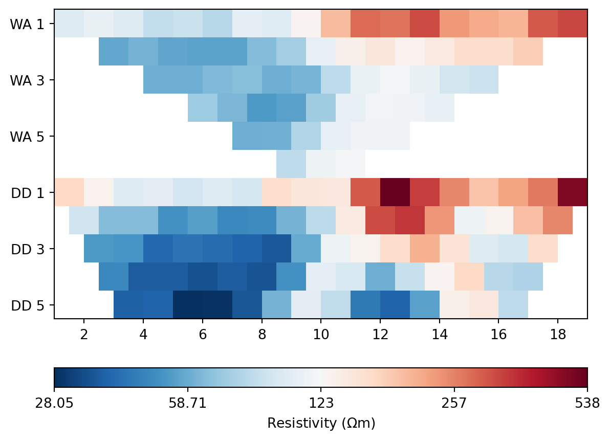
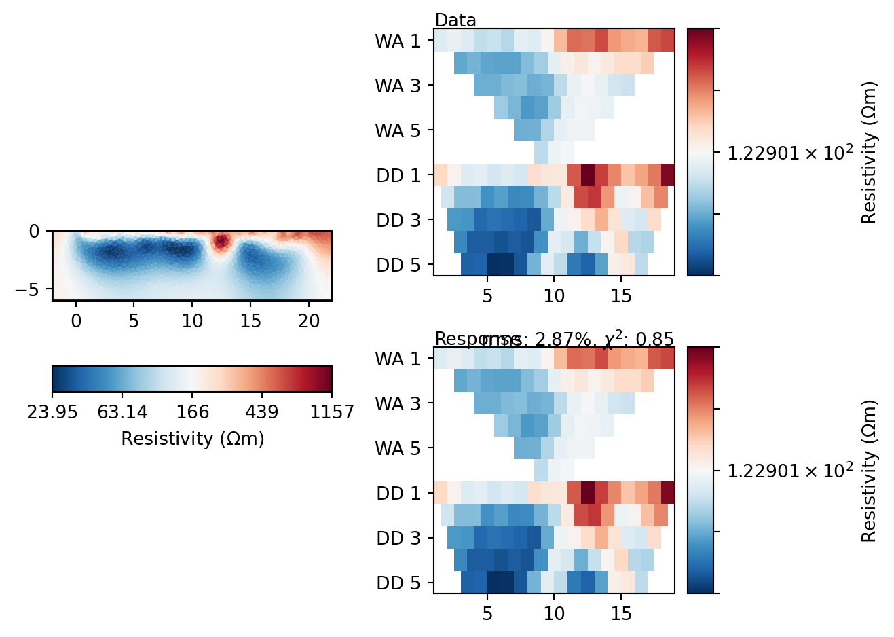
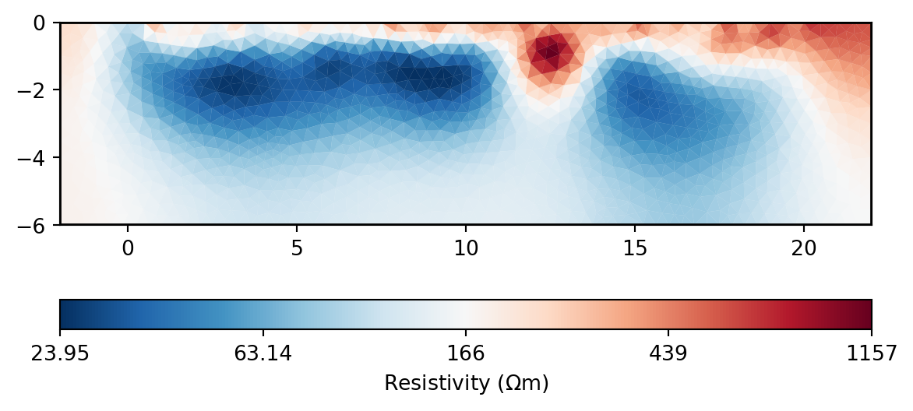
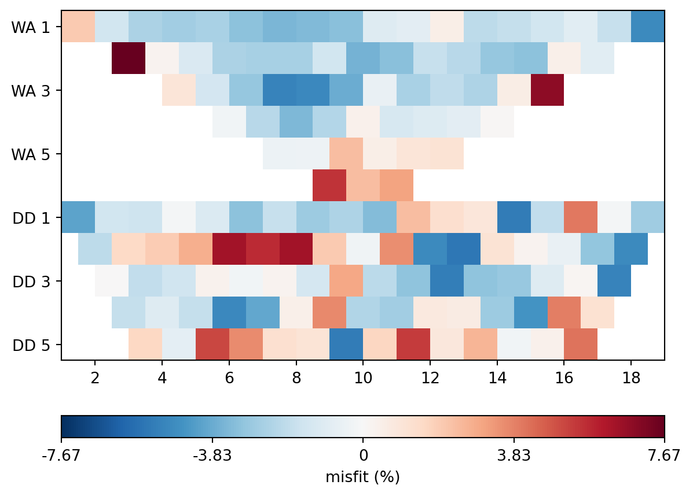

%matplotlib inlineInversion of DC resistivity data with pyGIMLi
The aim of the inversion is to reconstruct the spatial distribution of resistivity in the subsurface. This is based on the measured data, usually ohmic resistances \(R(L)\) in \(\Omega\) or apparent resistivities \(\rho_s(L)\) in \(\Omega\cdot m\). All measured values depend on the location and the geoelectric electrode configuration (denoted here by \(L\)).
Installation
The pyGIMLi is a Python library. We assume that a Python environment is already installed. The easiest option is anaconda.
First, pyGIMLi must be installed so that it can be accessed under Python. This is done with conda:
conda install -c gimli -c conda-forge pygimli=1.3.0Preparation
We import the two libraries pygimli and numpy.
import pygimli as pg
import numpy as np
from pygimli.physics import ert
from pygimli.physics.ert import ERTManagerprint(pg.__version__)1.2.6The data format
pyGIMLi expects the measured data in a special file format, the Unified Data Format (description on the project page of BERT). These are ASCII files, which can be edited with all common text editors.
Such a measured value file contains the following sections: - Number of electrodes as well as coordinates (position and height) of the electrodes with implicit numbering - Number of measured values as well as the data resulting in each case from the combination of two to four electrodes.
The example shows a small data set with 6 electrodes and 6 single measurements in the configuration Dipole-Dipole (recognizable by the order a b m n of the electrodes and probes). The 5th column of the data block contains the apparent resistivity (rhoa) in \(\Omega\cdot m\).
6# Number of electrodes
# x z position for each electrode
0 0
1 0
2 0 # loose ground
3 0
4 0
5 0
6# Number of data
# a b m n rhoa
1 2 3 4 231.2
2 3 4 5 256.7
3 4 5 6 312.8
1 2 4 5 12.1 # possibly an outlier
2 3 5 6 199.7
1 2 5 6 246.2Inversion of a field data set
Background
For this example, we use data from a measurement above the piped stream “Goldbach” in the center of Freiberg.
The Goldbach, also known as the Saubach, is an approximately 5 km long left tributary of the Münzbach in Freiberg.
Its entire course is located in the territory of the city of Freiberg. The headwaters are located between the Großer Teich and the Mittelteich ponds or around these ponds in the Freiberg city forest at an altitude of about 460 meters. After passing the Mittelteich, it flows about 300 m to the northwest and then turns almost 90° to the northeast. Parallel to the Ölmühlenweg it reaches the development boundary of the city of Freiberg. Here, at the level of the Schützenhaus on Chemnitzer Straße, it enters a piped section about 400 m long, which ends at the Mühlteich. After flowing through the Mühlteich, after about 200 m it reaches the Hammerteich with the former Freibergsdorfer Hammerwerk, to which it supplied the service water at that time. After another 800 m it is again piped. After flowing through the Kreuzteiche and the Schlüsselteich, it reaches the Münzbach in the Freiberg district of Loßnitz after about 5 km in a piped condition, having meanwhile turned to a more northerly direction.
DC resistivity profile setup
The profile measurement was carried out with the Wenner, and Dipole-Dipole configurations using 21 electrodes.
The dipole-dipole data set consists of 80 individual measurements, and the Wenner data set consists of 63 individual measurements. All data is stored in the file parkall.mea.
The Python object wenner contains all measured data:
wenner = pg.load("parkall.mea")
print(wenner)Data: Sensors: 21 data: 143, nonzero entries: ['a', 'b', 'm', 'n', 'rhoa', 'valid']wenner['k'] = ert.createGeometricFactors(wenner, numerical=True)In the pyGIMLi method ERTManager() all functions for the inversion of geoelectric data (Electrical Resistivity Tomography, ERT) are implemented.
The object ertwenner will hold, among others, the model response and the model parameters.
ertwenner = ERTManager()Since our data set does not contain measurement errors, we estimate plausible absolute and relative data errors. Absolute errors are given in \(\Omega\cdot m\).
wenner['err'] = ertwenner.estimateError(wenner, absoluteError=0.1, relativeError=0.03)The following figure shows pseudosections of the apparent resistivity \(\rho_s\). The trapezoidal shape comes from the arbitrary choice of the horizontal reference point in the profile plot for the Wenner or dipole-dipole arrangement. The ordinates in the following two figures represent the electrode spacing for Wenner (WE) and the separation between current pole and voltage dipoles for the dipole-dipole (DD) array. Note: The vertical axis is not a depth axis!
ertwenner.showData(wenner, cMap="RdBu_r");
Data inversion
The method ert.invert performs the inversion of the data (data) for a specified regularization parameter \(\lambda\) (lam=10) and a maximum model depth of paraDepth=10 meters and a maximum triangular size of the finite elements of paraMaxCellSize=1 \(m^2\).
The results of the inversion calculation – the distribution of resistivity in the subsurface and the model response – are stored in the object mod.
The lam parameter is assigned the value of the selected regularization parameter \(\lambda\).
If the value of \(\lambda\) is too low, a singularity of the least squares problem, if present, is expressed by strongly fluctuating values in the resistivity distribution in the subsurface. In the opposite case, if \(\lambda\) is too large, the resistivity distribution becomes very smooth.
Here we can try out what influence the regularization parameter has on the solution of our problem.
lam = 10modwenner = ertwenner.invert(wenner, lam=lam, paraMaxCellSize=0.1, paraDepth=6, verbose=False);The following figures illustrate the relationship between the model parameters (\(\rho(\mathbf r)\)) and the measured apparent resistivity (Data) and the model response (Response).
ertwenner.showResultAndFit(cMap="RdBu_r");
The Goldbach flows in a concrete pipe at about profile meter 12.
ertwenner.showModel(modwenner, cMap="RdBu_r");
Of interest is the goodness of fit, which we refer to as misfit. This is the relative error between data and model response. A graphical representation of this error is informative:
misfitwe = ertwenner.inv.response / wenner['rhoa'] * 100 - 100
me = np.max(np.abs(misfitwe))
pg.show(wenner, misfitwe, cMap="RdBu_r", cMin=-me, cMax=me, label="misfit (%)");
The global misfit is described with the \(\chi^2\)-statistic and amounts to
ertwenner.inv.chi2()0.8469349648613855Discussion
We have seen that the inversion result can be influenced by the choice of different parameters. Especially the data fitting and model properties are affected.
- Which parameter controls the roughness of the model?